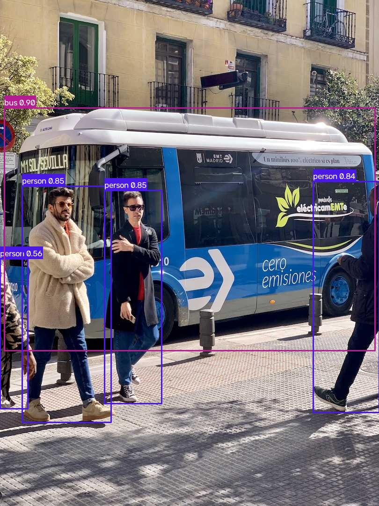

Python · C++ · ONNX Runtime · YOLO26
Real-time multi-object detection & tracking
A complete computer-vision pipeline: detect objects with YOLO26 across 80 classes, keep persistent IDs through IoU-based ByteTrack matching, and run inference from both a Python and a C++17 backend.
Detection in action
A single frame through the pipeline — raw input on the left, annotated output on the right. Boxes, class labels, and confidence scores drawn in native OpenCV.


What it does
Three interaction modes, one shared pipeline.
Image detection
Upload any image and get objects bounded with class labels and confidence scores in a single pass.
Video tracking
Full videos processed frame-by-frame. ByteTrack assigns each object a persistent ID that survives across frames.
Live webcam
Real-time detection and tracking straight from your camera, streamed at interactive frame rates.
Tunable inference
Confidence and IoU thresholds exposed as live controls, so you can trade precision against recall on the fly.
How it works
A letterboxed 640×640 tensor flows through the model, then back out to original coordinates.
Preprocess
Letterbox resize to 640×640, BGR→RGB, normalize to [-1, 1], NCHW layout.
Infer
YOLO26 runs in ONNX Runtime (Python or C++), emitting a raw (1, 84, 8400) tensor.
Decode
Anchor-free decode + class-aware NMS distill detections down to boxes, scores, and class IDs.
Track
IoU matching assigns persistent IDs; stale tracks age out after 30 missed frames.
Annotate
Boxes, label pills, track IDs, and motion trails drawn back onto the original frame.
Tech stack
Deliberately standard and demonstrable.
Quick start
Clone, install, run.
# Clone and install
git clone https://github.com/Lush08/visiontrack.git
cd visiontrack
python -m venv venv && source venv/bin/activate # Windows: venv\Scripts\activate
pip install -r requirements.txt
# Launch the interactive demo
cd python
python demo_gradio.py # → http://localhost:7860
# Or run inference on a single image from the CLI
python demo_tracker.py --source ../test_bus.jpg --output result.jpgBuilt by Armaan Dhall
A portfolio project demonstrating the full ML deployment path — training, export, inference in two languages, web demo, and CI.